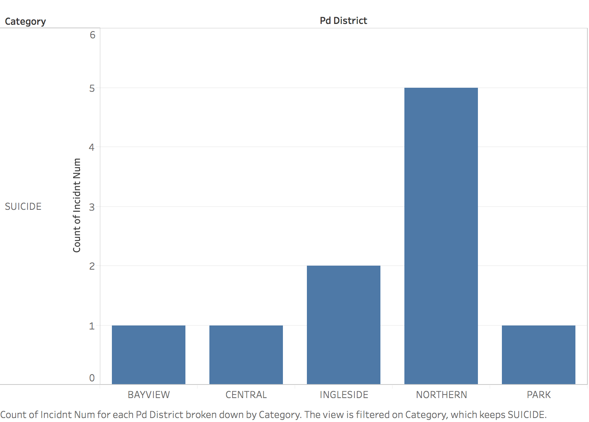
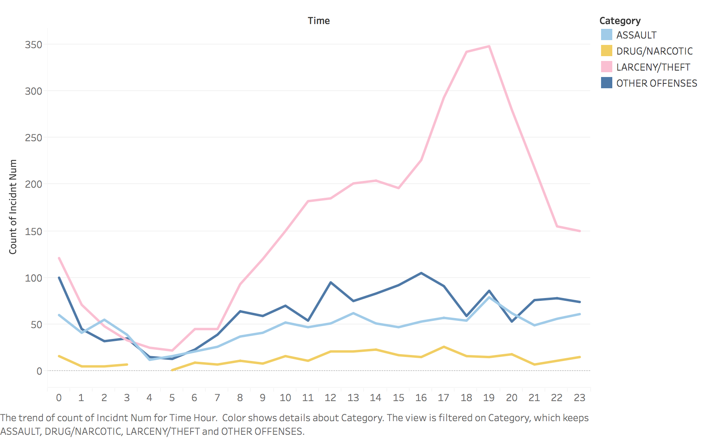

Description: This bar chart counts the number of each type of incidents in Tenderloin. From the chart, we can easily tell that the incident larceny/theft is the most common crime at this district, which the incident number is 170.
Learning Outcome: The reason I use bar chart is that the incident catagory in Tederloin is 27, which is too many info for pie chart or line chart, and bar chart is best fit for compare and show the incident numbers for each catagory at a specific district.
Description: This bar chart counts the number of suicide in different districts, and get a result that the Northern has the most people to suicide.
Learning Outcome:
Description: This line chart counts the number of four catagory vary time.
Learning Outcome: